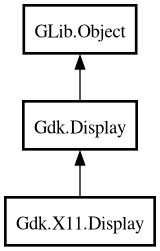

Display
Object Hierarchy:

Description:
[
CCode ( type_id =
"gdk_x11_display_get_type ()" ) ]
[
GIR ( name =
"X11Display" ) ]
public class Display :
Display
Content:
Static methods:
Creation methods:
Methods:
- public void broadcast_startup_message (string message_type, ...)
- public int error_trap_pop ()
- public void error_trap_pop_ignored ()
- public void error_trap_push ()
- public unowned string get_startup_notification_id ()
- public uint32 get_user_time ()
- public unowned Display get_xdisplay ()
- public void grab ()
- public void set_cursor_theme (string? theme, int size)
- public void set_startup_notification_id (string startup_id)
- public void set_window_scale (int scale)
- public int string_to_compound_text (string str, out Atom encoding, out int format, out uint8[] ctext)
- public int text_property_to_text_list (Atom encoding, int format, string text, int length, out string[] list)
- public void ungrab ()
- public bool utf8_to_compound_text (string str, out Atom encoding, out int format, out uint8[] ctext)
Inherited Members:
All known members inherited from class Gdk.Display
All known members inherited from class GLib.Object